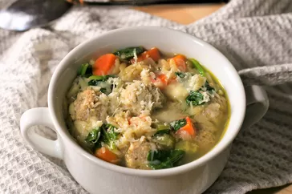

Italian Wedding Soup Recipe

Italian Wedding Soup
Italian Wedding Soup is a hearty and comforting soup with meatballs and
leafy greens. Follow these steps to make a delicious bowl.
Ingredients
- 1/2 pound ground beef
- 1/2 cup bread crumbs
- 1/4 cup grated Parmesan cheese
- 1 egg, beaten
- 1 teaspoon dried basil
- 8 cups chicken broth
- 1 cup acini di pepe pasta
- 2 cups fresh spinach, chopped
- Salt and pepper to taste
Instructions
-
In a bowl, combine ground beef, bread crumbs, Parmesan cheese, egg, and
basil. Form small meatballs.
-
In a large pot, bring chicken broth to a boil. Add meatballs and pasta.
Cook until meatballs are cooked through and pasta is tender.
-
Stir in fresh spinach and cook until wilted. Season with salt and
pepper.
- Serve hot and enjoy!